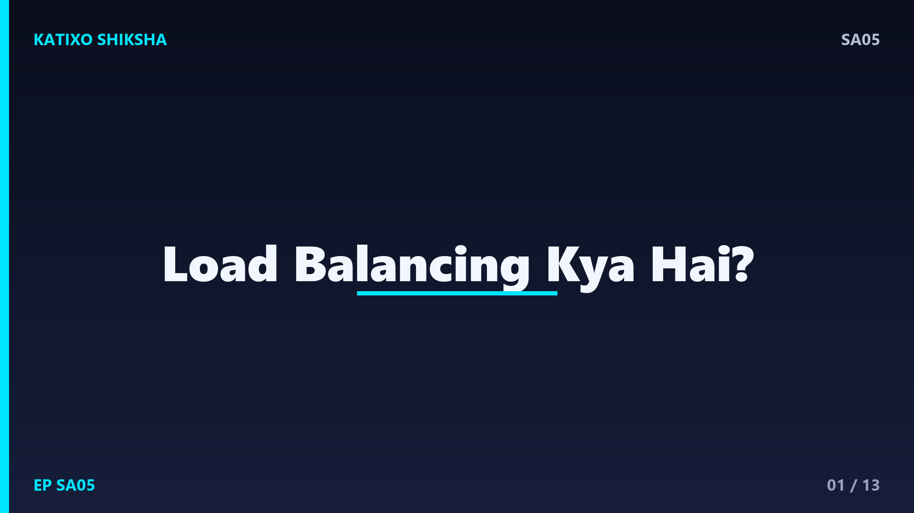
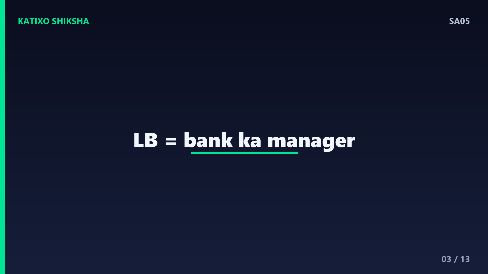
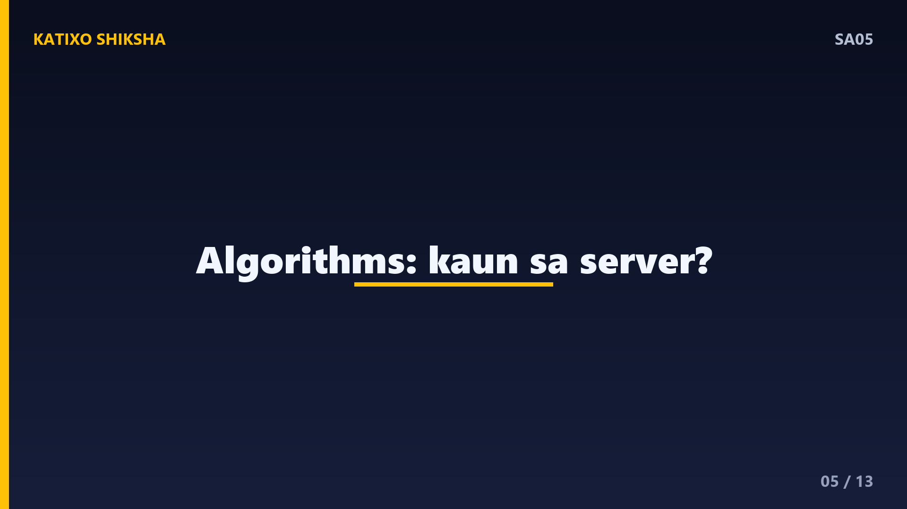
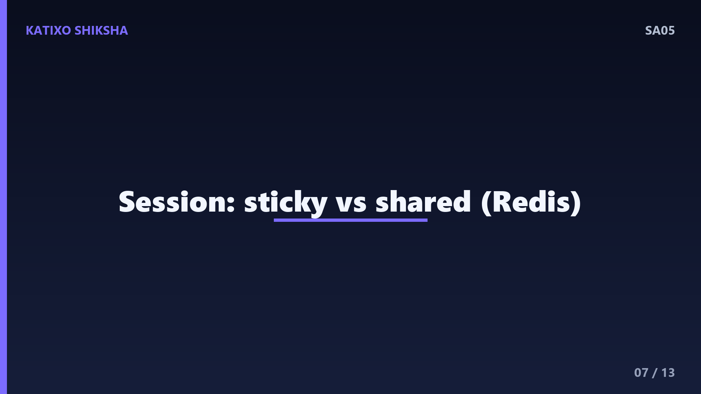
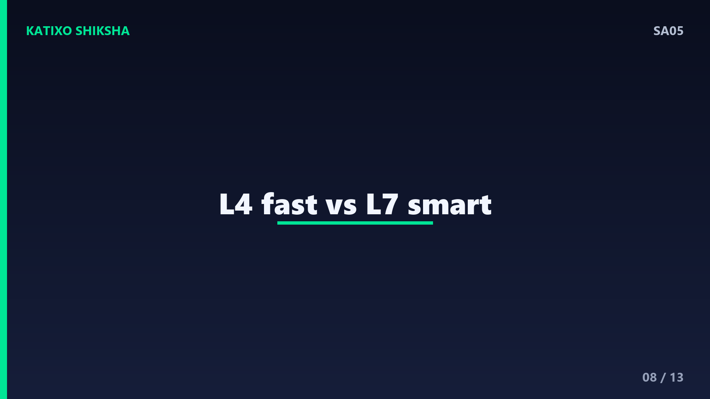
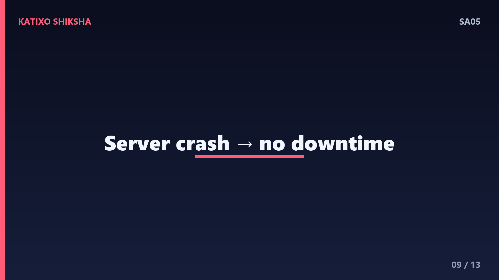
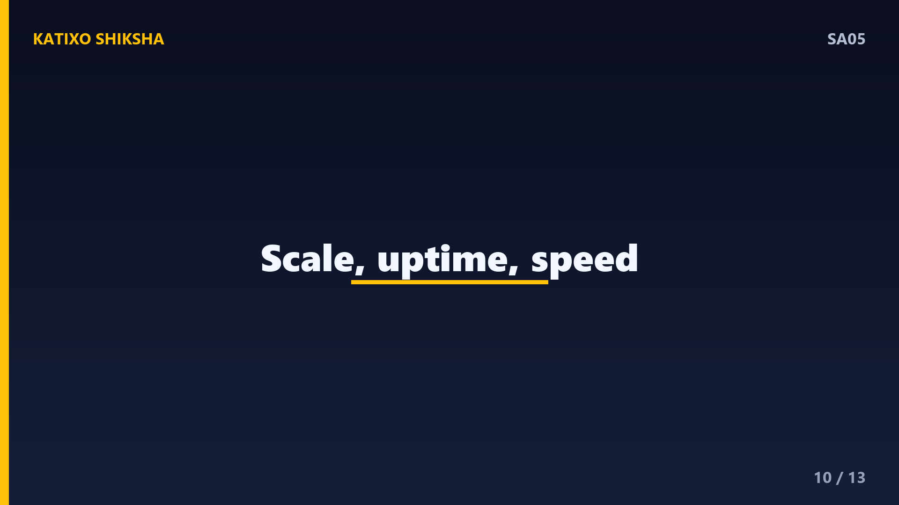
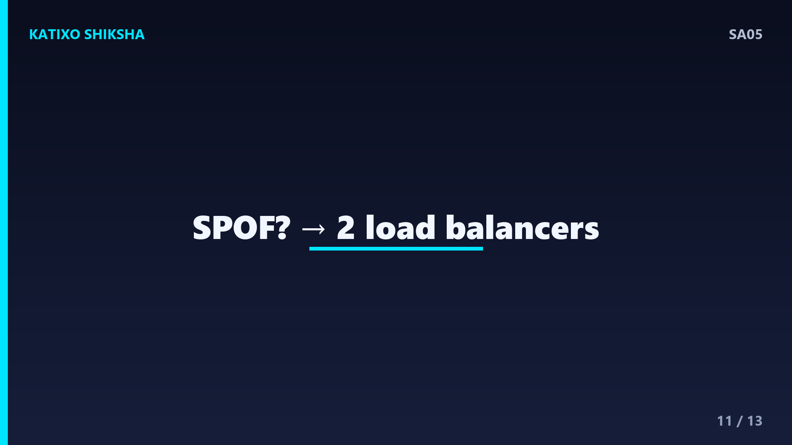
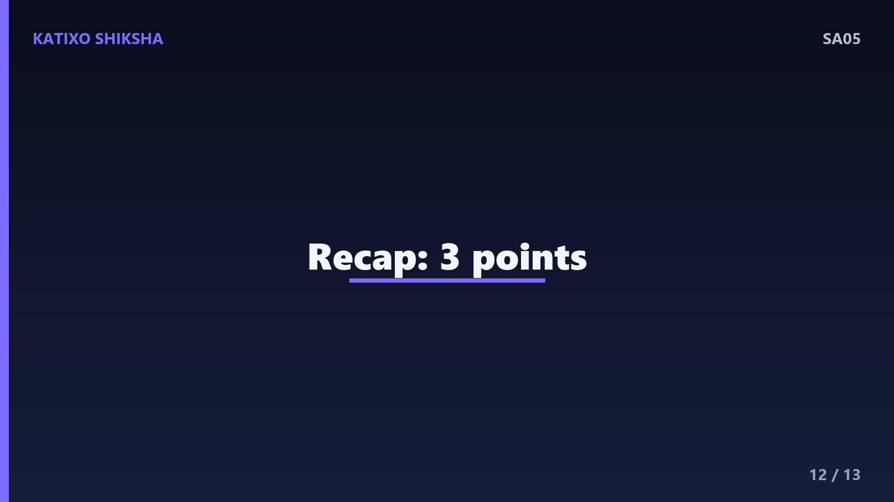

SA05 — Load Balancing Kya Hai — Traffic Ko Smartly Kaise Baante?

Slide 1दोस्तों, सोचिए आपके app पर अचानक sale के दिन लाखों users एक साथ आ गए. आपका अकेला server इतना load नहीं झेल पाता, slow हो जाता है, और फिर crash. अब अगर आप 4-5 servers लगा भी दो, तो सवाल ये है कि कौन सा request किस server पर जाए? यही फैसला करता है load balancer. आज Katixo KhojLab की इस episode में हम साफ़ Hinglish में समझेंगे कि load balancing क्या है, कैसे काम करती है, और interview में इसके बारे में क्या पूछा जाता है. चलिए शुरू करते हैं।
Slide 2सबसे पहले — load balancing है क्या? जब एक ही काम करने वाले कई servers हों, तो आने वाले requests को इन सब के बीच समझदारी से बाँटना ही load balancing है. इसके बीच में एक component बैठता है जिसे load balancer कहते हैं. सारे users पहले इसी load balancer से बात करते हैं, और ये decide करता है कि हर request को पीछे खड़े किस server पर भेजना है. मकसद साफ़ है — कोई एक server overload ना हो, सब पर बराबर काम बँटे, और app fast और reliable रहे.

Slide 3इसे एक आसान analogy से समझते हैं. सोचिए एक बड़ा bank, जहाँ बहुत सारे customers लाइन में हैं और कई counters खुले हैं. अगर सब एक ही counter पर भीड़ लगा दें, तो वो counter फँस जाएगा और बाकी खाली बैठे रहेंगे. इसलिए एक manager खड़ा होता है जो हर नए customer को उस counter पर भेजता है जो खाली है. वो manager ही है load balancer, counters हैं आपके servers, और customers हैं आपके requests. काम तेज़ी से और बराबरी से बँट जाता है.
Slide 4अब समझते हैं load balancer काम कैसे करता है. सारे servers का एक pool होता है, जिसे backend pool या server pool कहते हैं. User का request पहले load balancer के एक single address पर आता है. Load balancer एक नियम यानी algorithm के हिसाब से एक healthy server चुनता है, request उसे forward करता है, और जवाब वापस user तक पहुँचाता है. User को पता भी नहीं चलता कि पीछे एक नहीं, कई servers काम कर रहे हैं — उसे तो एक ही पता दिखता है.

Slide 5अब सबसे ज़रूरी हिस्सा — load balancing algorithms, जो interviews में अक्सर पूछे जाते हैं. सबसे simple है Round Robin — requests बारी-बारी हर server को, एक के बाद एक. फिर Least Connections — request उस server को जिस पर इस वक़्त सबसे कम active connections हैं. Weighted Round Robin — जिस server की capacity ज़्यादा, उसे ज़्यादा हिस्सा. और IP Hash — एक ही user का IP हमेशा एक ही server पर map हो जाए. हर algorithm का अपना फ़ायदा है, situation के हिसाब से चुना जाता है.
Slide 6अब एक बहुत important concept — health checks. Load balancer समय-समय पर हर server से पूछता रहता है — तुम ठीक तो हो? ये एक छोटी सी request भेजकर check करता है. अगर कोई server जवाब नहीं देता या crash हो गया है, तो load balancer उसे unhealthy मान लेता है और नए requests उस पर भेजना बंद कर देता है. जैसे ही वो server वापस ठीक होता है, उसे फिर pool में जोड़ लिया जाता है. इसी वजह से एक server गिरने पर भी आपका app चलता रहता है.

Slide 7अब एक practical दिक्कत — sticky sessions. मान लो एक user login करता है और उसका session data सिर्फ़ एक ही server पर रखा है. अगर अगली request किसी दूसरे server पर चली गई, तो वहाँ session मिलेगा ही नहीं, user logout जैसा महसूस करेगा. इसका एक हल है sticky sessions, यानी एक user को बार-बार उसी server पर भेजना. पर बेहतर तरीका ये है कि session data किसी shared जगह जैसे Redis में रखो, ताकि कोई भी server उसे पढ़ सके और सर्वर stateless रहें.

Slide 8अब एक common interview सवाल — Layer 4 बनाम Layer 7 load balancing. Layer 4 load balancer network level पर, यानी IP और port देखकर traffic बाँटता है — ये बहुत तेज़ है पर request के अंदर नहीं झाँकता. Layer 7 load balancer application level पर काम करता है, यानी ये HTTP request का URL, headers, cookies तक पढ़ सकता है. इससे आप smart routing कर सकते हो, जैसे slash api वाले requests एक pool पर और बाकी दूसरे पर. Layer 7 ज़्यादा powerful पर थोड़ा slow.

Slide 9अब एक concrete example से पूरा flow जोड़ते हैं. Sale का दिन है, आपके पीछे 3 servers हैं. पहला request आया, load balancer ने round robin से उसे Server 1 को दिया. दूसरा Server 2 को, तीसरा Server 3 को, चौथा फिर Server 1 को. अब बीच में Server 2 crash हो गया — health check fail हुआ, load balancer ने उसे हटा दिया और सिर्फ़ 1 और 3 को requests भेजने लगा. Users को कोई फ़र्क नहीं पड़ा, ना error, ना downtime. यही है load balancing की असली ताकत.

Slide 10अब बात करते हैं फ़ायदों की. पहला — scalability, यानी traffic बढ़े तो आप और servers जोड़ देते हो, load अपने आप बँट जाता है. दूसरा — high availability, एक server गिरे तो बाकी सँभाल लेते हैं, app down नहीं होता. तीसरा — better performance, कोई भी server overload ना होने से सब fast रहते हैं. और चौथा — आसान maintenance, आप एक-एक server को pool से निकालकर update कर सकते हो बिना app बंद किए. इसी को zero downtime deployment भी कहते हैं.

Slide 11अब कुछ ज़रूरी सावधानियाँ और interview points. खुद load balancer एक single point of failure बन सकता है — अगर वही गिर गया तो? इसलिए production में अक्सर दो load balancer रखे जाते हैं, एक active एक standby. एक common सवाल — load balancing और reverse proxy में फ़र्क? Reverse proxy भी आगे बैठता है, पर load balancing का खास काम है कई servers में traffic बाँटना. Cloud में आपको ready-made load balancers मिलते हैं, जैसे AWS का ELB, जो ये सब अपने आप सँभालते हैं.

Slide 12तो चलिए एक quick recap कर लेते हैं, तीन points में. पहला — load balancing आने वाले requests को कई servers में समझदारी से बाँटती है, ताकि कोई एक overload ना हो और app fast और reliable रहे. दूसरा — ये algorithms जैसे round robin और least connections से server चुनता है, और health checks से सिर्फ़ healthy servers पर ही traffic भेजता है. तीसरा — Layer 4 तेज़ पर सीधा, Layer 7 smart पर application-aware, और session data shared रखना stateless design की कुंजी है.
Slide 13तो दोस्तों, आज आपने सीखा कि load balancing किसी भी scalable system की रीढ़ है — यही वजह है कि बड़े apps लाखों users को बिना गिरे झेल पाते हैं. अगली बार जब कोई पूछे कि traffic बढ़ने पर app कैसे संभलता है, तो आप confidently load balancer, algorithms, health checks और high availability की बात कर पाओगे. एक बार Nginx जैसे tool से खुद एक छोटा load balancer setup करके देखें, सब clear हो जाएगा. Aisi aur system design videos ke liye Katixo KhojLab subscribe karein! मिलते हैं अगली episode में।